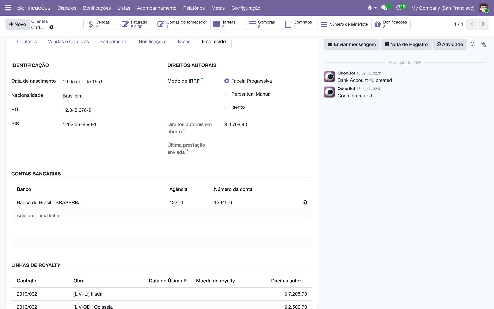

Prestação de contas
Emita o extrato de direitos autorais de cada autor — obra por obra, com adiantamentos, IRRF e o líquido a receber — em PDF, para imprimir ou enviar por e-mail direto do sistema.
Visão geral
Este módulo é a face do sistema voltada ao autor. Ele acrescenta:
- O menu — os contatos que são favorecidos de pelo menos uma linha de royalty. Um contato entra (e sai) da lista sozinho, conforme os contratos o citam.
- A aba Favorecido no cadastro do contato, reunindo os dados pessoais e bancários usados no extrato, as linhas de royalty de todos os contratos e o saldo em aberto.
- A Prestação de contas em si: um relatório em PDF que consolida, por autor, os royalties do período em todos os seus contratos e obras, com um assistente para imprimir ou enviar por e-mail.
Os números vêm do Cálculo de royalties e casam com as faturas do Pagamento de royalties: o total do extrato é, por construção, o mesmo saldo em aberto que a fatura do autor paga. Com o módulo de IRRF sobre direitos instalado, a dedução de IRRF do extrato segue a tabela progressiva (ou o modo do favorecido).
Configuração
O módulo não tem parâmetros próprios — mas o extrato só fica completo se o cadastro do autor estiver:
- Abra o autor em .
- Na aba Favorecido, seção Identificação, preencha Data de nascimento, Nacionalidade, RG e PIS. O CPF, o endereço e o e-mail vêm do cadastro geral do contato.
- Na seção Royalties, o campo IRRF (%) guarda o percentual fixo usado quando a retenção é manual (com o módulo de IRRF instalado, aparece antes dele o Modo de IRRF).
- Em Contas bancárias, cadastre Banco, Agência e o número da conta — a primeira conta da lista é a impressa no extrato.
- Para o envio por e-mail, confira que o contato tem e-mail cadastrado.
A mesma aba mostra, somente para consulta: as Linhas de royalty do autor em todos os contratos (com a Data do Último Pagamento e o saldo de cada uma), os Direitos autorais em aberto somados e a Última prestação enviada.

Emitir a prestação de contas
- Abra o autor (ou selecione vários na lista de ) e, no menu Ação, escolha Prestação de contas.
- No assistente, confira os Favorecidos e escolha a Data final do período — entram no extrato apenas os royalties apurados até essa data. O início do período é automático: a data do último pagamento de cada autor (ou "desde o início", se nunca houve pagamento).
- Clique em Imprimir para gerar o PDF na hora — um extrato por autor selecionado —, ou…
- …clique em Enviar por e-mail: cada autor recebe uma mensagem em português com o período, o valor líquido e o PDF anexado.
Ao enviar, o sistema ainda:
- registra a mensagem (com o anexo) no histórico do próprio autor;
- anota em cada contrato envolvido: "Prestação de contas (período) enviada para autor.";
- grava a Última prestação enviada do autor com a data final do período.
O envio exige e-mail cadastrado: se algum dos selecionados não tiver, o assistente para com a mensagem "Defina primeiro um endereço de e-mail para: …" e nada é enviado até você completar o cadastro.
O que o PDF traz
O documento sai com o cabeçalho e as cores da sua empresa (a paleta das tabelas é derivada da cor principal definida em ) e as datas por extenso em português. As seções:
| Seção | Conteúdo |
|---|---|
| Resumo | Período, Valor total (o que as obras renderam), A recuperar (adiantamento) — mostrado só quando há adiantamento sendo recuperado —, A deduzir (IRRF) e A receber (o líquido). |
| Direitos autorais | Uma linha por obra/canal com saldo em aberto: Obra / Canal, Contrato, Livros vendidos, Valor base, % (ou "variável", quando a faixa mudou dentro do período) e Direito autoral. |
| Faturas em aberto | As faturas de pagamento do autor ainda não pagas, com data, vencimento, valor e situação — o valor delas confere com o total do extrato. |
| Vendas especiais | Detalhe das vendas com desconto qualificado das obras do autor no período: cliente, documento, obra, quantidade, desconto e valor. |
| Adiantamentos | Os adiantamentos por obra, separando Adiantamento descontável e Não descontável — impresso quando existe algum. |
| Dados do autor | Nome completo, CPF, RG, PIS, data de nascimento, nacionalidade, endereço, e-mail e os dados bancários (banco, agência, conta corrente). |

Vendas especiais
Feiras, saldões e vendas diretas costumam sair com desconto grande — e o contrato do autor muitas vezes é por preço de capa. Sem tratamento, o autor receberia royalty sobre um preço que a editora não praticou. A venda especial resolve isso: ela é sempre calculada sobre o valor líquido faturado, o que realmente entrou, independentemente do modo da linha de royalty.
Uma venda conta como especial quando as duas condições valem ao mesmo tempo:
- a fatura veio de uma das Equipes de Vendas Especiais configuradas (por exemplo, a equipe de feiras e eventos); e
- o desconto da linha atinge o Desconto Mínimo Venda Especial (%) — com o mínimo em 0, qualquer desconto qualifica.
- Configure em , seção Vendas Especiais: escolha as equipes e o desconto mínimo.
- Venda normalmente por essas equipes — nenhum passo extra na fatura.
- No contrato, o botão inteligente Vendas Especiais aparece quando houver alguma, abrindo a lista das faturas qualificadas das obras daquele contrato.
- No extrato, a seção Vendas especiais detalha cada uma — cliente, documento, obra, quantidade, desconto e valor — com o total do período. O autor enxerga exatamente por que aquelas vendas renderam sobre o líquido.
Contrato a 10% sobre preço de capa de R$ 60. Numa feira (equipe configurada), o livro sai com 50% de desconto, faturado a R$ 30. Em vez de R$ 6 por exemplar (10% da capa), o autor recebe R$ 3 (10% do líquido) — e o extrato mostra a venda, o desconto e o valor, sem surpresa na prestação de contas.
A regra de cálculo vive no Cálculo de royalties; esta página descreve como ela aparece para o autor. Em contratos que já apuram sobre o valor líquido, a venda especial não muda o valor — só ganha o detalhamento próprio no extrato.
Regras que garantem os números
- O total do extrato é o saldo em aberto. O extrato soma o que foi apurado desde o último pagamento de cada linha até a data final — exatamente o que a fatura em aberto do autor paga. Extrato, saldo e fatura são o mesmo número.
- O adiantamento reduz, mas nunca negativa. Quando o adiantamento ainda supera o que as obras renderam, o extrato mostra o rendimento e a recuperação limitada a ele: o valor a receber fica em zero, nunca negativo — o restante segue para os períodos seguintes.
- Adiantamento não é descontado duas vezes. O que um pagamento anterior já quitou (adiantamento incluído) não volta a ser abatido no extrato seguinte.
- Períodos fechados ficam fora. Royalties já quitados pela data de corte não reaparecem; o extrato seguinte começa de onde o anterior parou.
- IRRF coerente com o pagamento. Com o módulo de IRRF, extrato e fatura calculam a retenção com a mesma tabela e o mesmo modo do favorecido; sem ele, vale o percentual fixo do campo IRRF (%).
Perguntas frequentes
O extrato veio "Nenhum direito autoral em aberto". O autor não tem saldo no período: ou as vendas ainda não foram apuradas (rode Preencher Linhas de Royalties no contrato), ou tudo já foi pago, ou o adiantamento ainda cobre o que as obras renderam.
Por que "A receber" é menor que "Valor total"? Pelas duas deduções que o próprio extrato mostra: a recuperação do adiantamento e o IRRF. O documento existe justamente para o autor ver essa conta.
Posso reemitir um extrato já enviado? Pode — imprimir não altera nada, e enviar de novo apenas gera outra mensagem e atualiza a Última prestação enviada. Os valores só mudam se a apuração ou os pagamentos mudarem.
Consigo emitir para vários autores de uma vez? Sim: selecione-os na lista de Favorecidos e use a mesma ação — Imprimir gera um PDF com um extrato por autor; Enviar por e-mail manda a cada um somente o seu.
O período impresso começa "desde o início". É o esperado para quem nunca recebeu: sem data de último pagamento, o extrato cobre tudo desde a primeira venda apurada.
- Cálculo de royalties — de onde vêm os números do extrato.
- Pagamento de royalties — a fatura que o extrato acompanha.
- IRRF sobre direitos — a dedução de imposto mostrada no resumo.
- Contratos de direitos autorais — o módulo base da suíte.